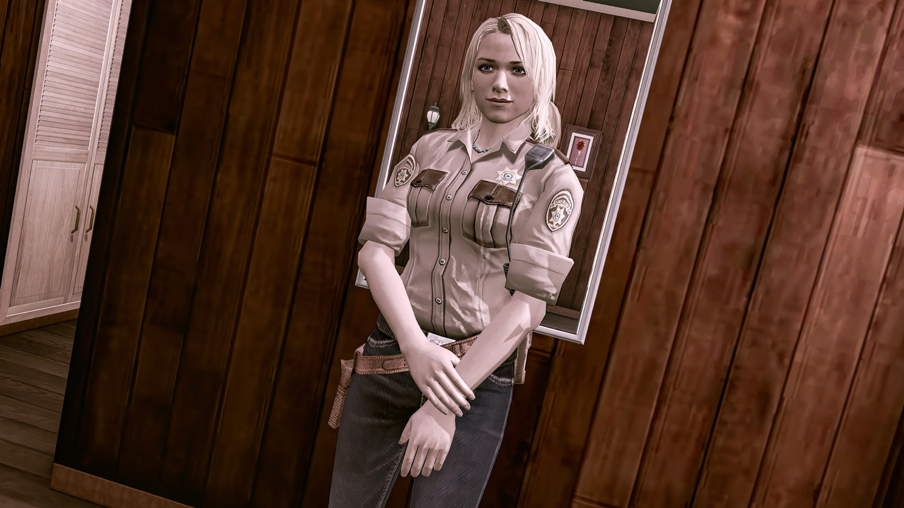
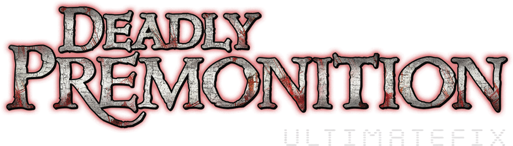

0.7.19latest
Fixes from players' reports.
- A hang after the video device is lost
- A crash after a very long session
- Doors of buildings seen from afar
- The map's zoom gauge, the colour of your own waypoint, the FPS panel in any corner


One file in the game folder instead of four fixes. Stability, real resolution, the gamepad, a photo mode, multiplayer for two and quests of your own. All of it in the menu on F10.
frames a second in our test on a PC where the game sat at 45
the same loading screen before and after version 0.7.18, from a player's log
in one Greenvale: your own server or joining by address
no installer: copy it into the game folder and press F10
Fixes from players' reports.
Shorter loading screens.
The prologue's smoke and multiplayer.
Every fix comes from taking the game's code apart and comparing it with the Xbox 360 original.
The crash after cutscenes, the Alt+Tab hang and the "45 frames" are fixed. Loading screens are several times shorter. Physics and timers run right at 120–180 FPS.
Your monitor's resolution instead of 1280×720, supersampling, HBAO, SMAA, the Xbox 360 look. The river has water again, and the prologue's smoke is smoke again.
A DualSense without Steam Input with adaptive triggers, the rumble the port never sent, aim on L2 and fire on R2.
The full pause map, waypoints on F7, the story's current goal and the timetable of every resident.
Money, time, weather, flying. Play as other characters, 16 cars and any item by name.
A mod manager with pictures and descriptions, the Fix texture mod included. The mod installs a new version itself: F9 on the start card.
Each of you plays your own game with your own story, and the other player is seen as a second York: with a name over the head, in his suit, with the weapon in his hand and at the wheel of his car.
A first version: two players, no shared cars, enemies or time. Between two computers it is still being tried by players.
Put any resident next to York, turn them, give them a pose and an expression. The camera flies free and time stands still.

A page beside the running game: the steps on the left, the game's own map in the middle, the properties on the right. The talk runs in the game's own dialogue mode, with your text.
Every fix comes from taking the game's code apart and comparing the PC port with the Xbox 360 original.
On the console the smoke is multiplied by a mask and comes out in wisps. The port draws it as two black sheets that add up to a blob. The mod makes the smoke sheet again; the Xbox 360 texture was found by Darkanioid1997.
The smaller copies of textures were made level by level through the video card, each step waiting for the frame. The mod now builds them itself in memory.
After the video device is lost the game tries to reset it every 50 ms forever if anything was left on it. The mod now releases its own before every try.
The game counted time from the Windows uptime in single-precision floats: after days without a reboot the frame time lost precision. The mod hands it a counter that starts with the game.
Every frame the game asked Windows about a WinMM gamepad, even with none connected, and on some systems that call takes milliseconds.
The play camera's near plane sat at 1.0, so the 24-bit depth buffer had almost no precision far away. At 20.0 far roads, roofs and decals stop fighting.
About 80 timers turned the frame time into whole ticks: above 120 FPS they stood still or ran double. They now share whole steps.
The port read the building list with a wrong byte-order key: 64 of 81 entries were misread and interiors got the wrong light.
An NPC sent to waypoint -1 read the navigation table out of bounds. Guarded at the lookup, together with a divide-by-zero freeze and a NaN hang.
Put a folder into UltimateFix\mods\ and switch it on in F10 → Mods. The game's files stay as they are: everything is replaced in memory.
Any file of the game's archives right in the mod folder: by its name when it is unique, or by its path (UPDATA\…). A .dds with an XPC's name replaces the picture inside it.
text\mes_all.json and glyphmap.json of the SWERY Localization Tool are laid over the game's text, record by record.
textures\<hash>.dds or .png, compatible with the packs for DPfix. [Debug] DumpTextures=1 dumps every texture named by its hash.
Deadly Premonition The Director's Cut\ ├─ DP.exe ├─ X3DAudio1_7.dll ← UltimateFIXDP └─ UltimateFix\ └─ mods\ ├─ UA\ │ ├─ fontwide.xpc │ └─ mes_all.mes └─ HD Textures\ ├─ mod.ini └─ textures\ └─ 1a2b3c4d.dds
Take the latest UltimateFIXDP-*.zip from Releases and back up savedata\dp.sav.
Put X3DAudio1_7.dll and the UltimateFix folder next to DP.exe.
Start the game as usual and press F10. To remove the mod, delete the DLL.
Steam version 1.01b. Do not combine with DPfix, ZachFix or DPStabilityFix: UltimateFIXDP replaces them. For a DualSense turn Steam Input off for the game.
Yes. The mod writes dp.sav through a temporary file and keeps 60 backups in UltimateFix\savebackups, each named by episode, chapter and play time. A damaged save is restored from the newest good copy by itself. Still, back up your save before the first start.
The Steam version 1.01b of The Director's Cut. Every patch checks the game's bytes first: on another build it switches itself off and says so in ufx.log.
No, UltimateFIXDP replaces them. Remove DPfix (d3d9.dll, DPfix.ini) and the other fixes first.
Make a folder in UltimateFix\mods\ and put the game files there (fontwide.xpc, mes_all.mes), or the text\ folder of the SWERY Localization Tool. Switch it on in F10 → Mods and restart the game.
Turn Steam Input off for the game (Properties → Controller). Then the mod reads the DualSense directly over USB or Bluetooth.
UltimateFix\ufx.log and any crash_*.dmp / hang_*.dmp, through GitHub Issues or Telegram. Every feature can be switched off in F10; [Debug] SafeMode=1 starts with fewer hooks.
Delete X3DAudio1_7.dll from the game folder. Nothing else of the game is changed; to undo the 4 GB flag, put DP.exe.bak back as DP.exe or let Steam verify the files.
The mod writes a readable log and a dump when the game crashes or hangs. From such reports seven problems were fixed in versions 0.7.18 and 0.7.19, and each got an answer explaining the cause.
The code is our own (MIT). The ideas, facts and addresses came from earlier community work.
Darkanioid1997
The prologue's smoke texture and the Greenvale signs from the Xbox 360 version
h714je
Research of the port, many ideas
Peter «Durante» Thoman
Resolution, shadows, texture replacement
Cesario67
Saves, timing, DualSense layout
Behelit09
Navigation crash, the full map, free camera
«Little Bit»
Our Xbox 360 recompilation: the reference the PC port is compared with
Kenney
Gamepad button icons (CC0)
Testers: Gold flin, Tree Fan, EliParker and everyone who sent a report with a log. Thank you for playing the unfinished builds.